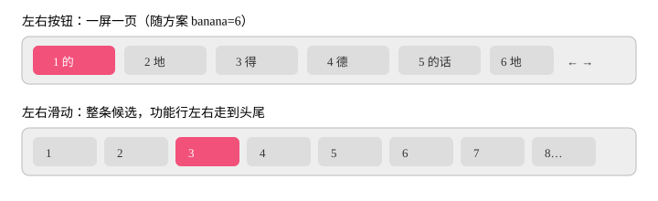

说明书
键盘
26 功能、26 标准、46 增强、T9、英文九键、注音九键、笔画、英文、数字。布局窗口按方案 keyboard.family 决定哪几块能点。换皮肤不改方案。
1 的2 地3 得4 德5 …
左首选剪拷贴尾右
QWERTYUIOP
高度 75%–125%，宽度 60%–100%。侧栏左手 / 右手 / 关。
候选翻页

- 数量默认「随方案」，也可固定 1–10。
- 「左右按钮」：到边翻 rime 页。随方案时 banana 一页 6 个。
- 「左右滑动」：候选排成一条。功能行左右色块走到第一个和最后一个，不受 6 卡住。
中文九键
键面送音节字母进当前方案，不切 schema。空格是选定，回车是确定。